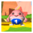
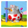

A estos Shy Guys les gusta seguir a Yoshi. Si estos se encuentran cerca cuando terminás una fase, a lo mejor algo bueno pasará...

Miss Warp
Hay cuatro en cada fase. Salta sobre su cabeza para despertarla y podrás teletransportarte a la siguiente Miss Warp despierta. Los teletransportes se efectuarán por orden (1 > 2 > 3 > 4 > 1). Si pierdes una vida, retomarás el juego desde la Miss Warp con el número más alto que hayas despertado.

Pak E. Derm
Efectúa un salto maza cerca de él para que te deje pasar.
Poochy
Este perrito tan simpático es capaz de detectar zonas en las que hay algún objeto oculto.